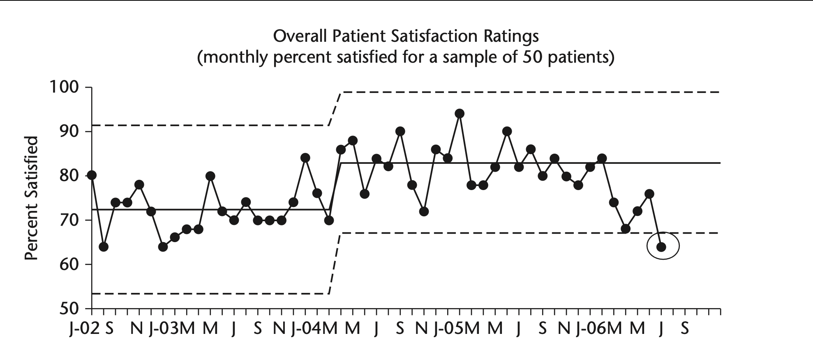

Statistical Process Control (SPC) Charts Rules
Why Rules may be unclear
Different rules for Run Charts and SPC Charts
Many different rule sets
- 3-Sigma Rule: The original test devised by Shewhart as one test to identify special cause variation. The rule signals if one or more data points fall outside the 3-sigma limits. While effective in detecting larger shifts in data, minor of moderate shifts may go unnoticed. Therefore, many additional tests have been proposed to increase the sensitivity to non-random variation.
- Western Electric Rules described in the Statistical Quality Control Handbook (Western Electric Company 1956).
- Nelson Rules first published in the October 1984 issue of the Journal of Quality Technology in an article by Lloyd S Nelson.[1]
- Healthcare Rules recommended by the Institute for Healthcare Improvement
Rules are not intuitive
- Most of the rules (other than rule 1) derived derived from Monte Carlo methods.
Rules for Determining a Special Cause
There is general agreement among users of Shewhart charts that a single point outside of either limit is an indication of a special cause of variation.
However there have been many suggestions for systems of rules to identify special causes that appear as nonrandom patterns within the limits. Provost[2] uses five rules which are recommended for general use with Shewhart charts. These rules are consistent in the sense that the chance of occurrence of Rules 2 through 5 in a stable process is approximately equal to the chance of Rule 1 occurring in a stable process. The occurrence of any one of the rules is a clear indication of the presence of a special cause.
Figure 4.5 summaries these five rules 
Interpretation of Rules
While they work as a system, each rule is useful to identify different types of special causes.
Rule 1 quickly identifies sudden changes in the measure.
Rule 2 identifies small, sustained changes (like a small improvement to a process).
Rule 3 detects a small, consistent drift in a process (trend).
Rule 4 adds additional sensitivity to detect changes that have not yet triggered Rule 1 or Rule 2.
Rule 5 is especially useful in detecting a reduction of variation with an I chart, or for detecting improper subgrouping − with an X chart.
For improvement activities, these five rules can be used to provide evidence of an improvement to a process or system. These rules also provide evidence of “losing” gains previously made in a system.

Appendix
- Comparison of some common rules:
- Health Care Data Guide summary
- QI Course Rules are those proposed by Provost